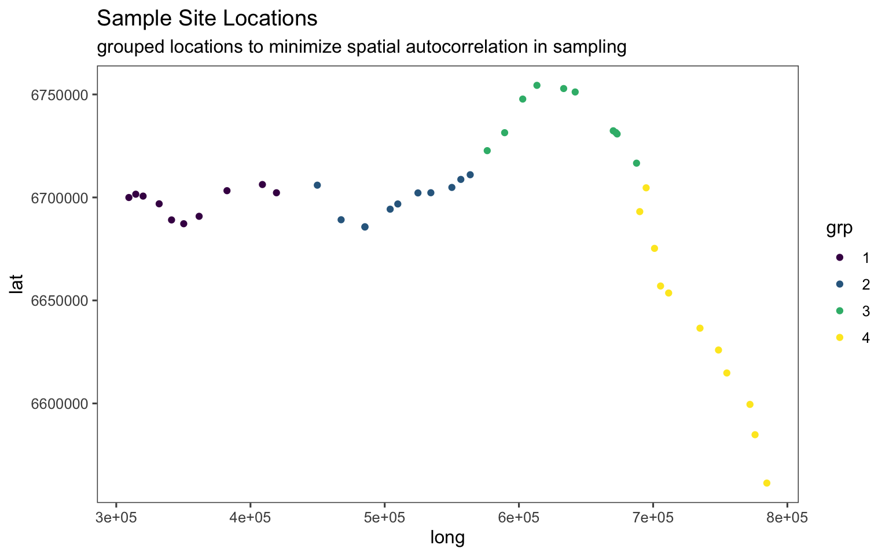

8 Beginning Machine Learning
This analysis utilzes XGBoost, an optimized distributed gradient boosting library designed to be highly efficient, flexible and portable. It implements machine learning algorithms under the Gradient Boosting framework. XGBoost provides a parallel tree boosting (also known as GBDT, GBM) that solve many data science problems in a fast and accurate way.
A helpful introduction to utilizing XGBoost in R can be accessed here.
8.1 Objective
An old friend told me today about a term called “Grad student descent” which is a play on words with the term gradient descent, an extremely common tool used to tune hyperparameters (and parameters) for machine learning models. Grad student descent then is when that method is simply having grad students search a parameter space manually in part to improve the model, and in part to learn how these algorithms work.
Today we are trying to predict the concentrations of either chlorophyll a (CHLA)
or total suspended sediment (TSS) in the Loire River France using satellite imagery.
The grab sample data (someone grabbing water from a stream for analysis), comes
from the French electricity agency who collects this data to meet their water
quality standards.
Basically the core idea here is that water color as captured in an image tells you
something about what is in the water. If it’s green and bright (lots of light
reflected from the water), then it may have a lot of algae (Chlorophyll a is a proxy
for algal biomass). If it’s tan and bright, it may have lots of sediment. If it’s
dark and blue it’s clear!
This color information is captured in “bands” like red, blue, green etc… from the Landsat series of satellites, which have collected data over the world since the late 70s. For this analysis we are only using Landsat 5,7, and 8, so the data goes back to 1984.
8.2 Spatial autocorrelation grouping
The code below utilizes a rudimentary technique for addressing spatial autocorrelation. For a more robust solution, the UCLA Statistical Consulting Group provides a helpful guide for addressing spatial autocorrelation. In spatial data, it is often the case that some or all outcome measures exhibit spatial autocorrelation. This occurs when the relative outcomes of two points is related to their distance. When analyzing spatial data, it is important to check for autocorrelation.
## define group by spatial location
grp_wq_sr <- wq_sr %>%
distinct(site_no, long, lat) %>%
arrange(long, lat) %>%
mutate(
pct_rank = row_number()/n()
, grp = case_when(
pct_rank <= 0.25 ~ "1"
, pct_rank <= 0.5 ~ "2"
, pct_rank <= 0.75 ~ "3"
, TRUE ~ "4"
)
)
## quick plot of sample sites
ggplot(grp_wq_sr, aes(x=long, y=lat, color=grp)) +
geom_point() +
labs(
title = "Sample Site Locations"
, subtitle = "grouped locations to minimize spatial autocorrelation in sampling"
) +
theme_few() +
scale_color_viridis(discrete = TRUE)
## join to main data
wq_sr <- wq_sr %>%
inner_join(grp_wq_sr %>% select(site_no, grp), by = c("site_no"="site_no")) %>%
arrange(grp, site_no, date) %>%
group_by(grp)8.3 Model development
This is the fiddly bit. The goal? Tune hyperparameters to get the lowest RMSE and the best Measured/Predicted fit (points close to the red line).
## A vector that contains all the columns I want to keep.
predictors <- c(
"azimuth"
, "blue"
, "green"
, "nir"
, "red"
, "swir1"
, "swir2"
, "zenith"
, "NR"
, "BR"
, "GR"
, "SR"
, "BG"
, "BN"
, "BS"
, "GS"
, "GN"
, "ndvi"
, "ndwi"
, 'fai'
, "hillshade"
, "hue"
, "bright_tot"
, "bright"
)
#function to run model
booster <- function(df = wq_sr, pred='CHLA', title='Chlorophyll a', features = predictors){
non_nas <- (!is.na(df[,pred]))
#remove nas
df = df[non_nas,]
#Sample 60% of the data using groups defined above
train <- df %>%
group_by(grp) %>%
slice_sample(prop = .6) %>%
ungroup()
#Keep only data that is not in train
#How could we make this safer (spatiotemporal robustness)
test <- df %>%
anti_join(., train, by='index') %>%
ungroup()
## Actual boosting model
ag_mod <- xgboost(data=train %>%
dplyr::select(features) %>%
as.matrix(.),
label = train %>% pull(pred) %>% log10(.),
nrounds = 400,
nthread = 4,
eta = 0.1,
gamma = 0.0,
max_depth = 4,
min_child_weight = 1,
subsample = 1,
colsample_bytree = 1,
lambda = 4,
alpha = 0.1,
num_parallel_tree = 1,
print_every_n = 200
)
#Tune ntree, k, numcut, bands that you use, etc...
#apply predictions.
test <- test %>%
mutate(bpred = 10^predict(ag_mod, test %>%
dplyr::select(features) %>%
as.matrix(.)))
#Optional for log
#test[,pred] = 10^test[,pred]
#Remove NAs
test <- test %>%
filter(!is.na(pred)) %>%
as.data.frame()
error <-
tibble(rmse=Metrics::rmse(test$bpred,test[,pred]),
mdae=Metrics::mdae(test$bpred,test[,pred]),
mape=Metrics::mape(test$bpred,test[,pred]),
bias=Metrics::bias(test$bpred,test[,pred]))
## plot results
g1 <- ggplot(test,
aes_string(x=pred,y='bpred',color='year')) +
geom_point() +
geom_abline(intercept=0,slope=1,color='red') +
labs(x='Measured',y='Predicted') +
theme_few() +
scale_color_viridis_c() +
scale_x_log10(breaks = trans_breaks("log10", function(x) 10^x),
labels = trans_format("log10", math_format(10^.x))) +
scale_y_log10(breaks = trans_breaks("log10", function(x) 10^x),
labels = trans_format("log10", math_format(10^.x))) +
ggtitle(title)
## returns a list of the plot (g1), the error metric (error), and the
## model (ag_mod)
return(list(g1,error,ag_mod))
}8.3.1 Chl-a model
set.seed(81640) ### Makes the work reproducible, but you can hack this!
## call model function
chl_boost <- booster(df = wq_sr)8.3.3 Chl-a Error Metrics
## view error metrics
chl_boost[[2]]## # A tibble: 1 × 4
## rmse mdae mape bias
## <dbl> <dbl> <dbl> <dbl>
## 1 27.3 5.63 1.15 -6.67